System configuration
At first create a ReactionDiffusionSystem, which determines what to simulate.
This includes setting a unit system, the size and periodicity of
the simulation-box, particle species, reactions,
potentials and topologies.
These are set via properties and methods of the system object.
Physical units
The for ReaDDy relevant units are units of length, time, and energy. An instance of a ReactionDiffusionSystem is equipped with a particular set of these units, internally expressing everything in terms of that set. Per default it is given by
- length in nanometers,
- time in nanoseconds,
- energy in kilojoule per mol.
Should a different set of units be desired, it can be provided as constructor argument, e.g.,
custom_units = {'length_unit':'kilometer',
'time_unit': 'hour',
'energy_unit': 'kilocal/mol'}
system = readdy.ReactionDiffusionSystem([10, 10, 10] * readdy.units.meters,
unit_system=custom_units)
print(system.box_size)
>>> [ 0.01 0.01 0.01] kilometer
print(system.kbt)
>>> 0.5824569789674953 kilocalorie / mole
When setting the unit_system constructor argument to None, one sets up a unitless system. In such a case the thermal energy will be defaulted to kbt=1 and one cannot set a temperature anymore but has to set kbt directly.
system = readdy.ReactionDiffusionSystem(box_size=(10, 10, 10), unit_system=None)
print(system.kbt)
>>> 1.0
system.kbt = 42.
print(system.kbt)
>>> 42.0
print(system.temperature)
>>> ValueError: No temperature unit was set. In a unitless system, refer to kbt instead.
Internally, ReaDDy uses pint for handling units, so in principle all unit arithmetics that are supported by pint can also be applied when setting up a ReaDDy simulation.
The box size
The system’s only required argument is the simulation box size. The box itself is centered around the origin, so
given a ReactionDiffusionSystem(box_size=(lx,ly,lz)), it can be described
by $ [-\frac{L_x}{2}, \frac{L_x}{2} )\times [-\frac{L_y}{2}, \frac{L_y}{2} ) \times [-\frac{L_z}{2}, \frac{L_z}{2} ) \subset \mathbb{R}^3$.
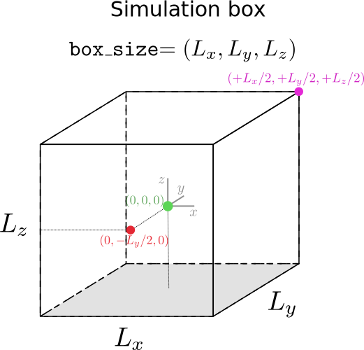
Periodic boundary conditions
The boundaries of the box can be either (partially) non-periodic or fully periodic. The degree of periodicity is set by either the periodic_boundary_conditions named constructor argument or property. A box that is periodic in y and z directions but not in x direction amounts to setting
readdy.ReactionDiffusionSystem([1,1,1], periodic_boundary_conditions=[False, True, True])
# or
system = readdy.ReactionDiffusionSystem([1,1,1])
system.periodic_boundary_conditions = [False, True, True]
If the box is not periodic in one or more directions, the particles have to be provided with a potential that keeps them inside the simulation box, see the section about potentials for details.
Temperature
If not specified otherwise, the temperature will default to $293\,\text{K}$. A different temperature can be either provided by the temperature named argument in the constructor or the temperature property. This behavior changes if one works in a unitless setup, see below.
Particle species
In order to add particle instances to the simulation, one first has to define the available species. This can be done by the add_species method of the system object.
The method takes as argument the species’ name and a diffusion constant $D$ in units of $\text{length}^2\text{time}^{-1}$. The diffusion constant effects the magnitude of the random displacement in the governing dynamics, which are described by an overdamped Langevin equation
where $k_B$ is the Boltzmann constant, $T$ the temperature, $V$ the potential, $\mathbf{x}(t)\in\mathbb{R}^3$ a vector corresponding to the instantaneous position of a particle at time $t$, and $\xi(t)$ is a random velocity with
This means that $\xi$ is a time-uncorrelated random variable that contains values according to a normal distribution in each of its components.
If one would want to register two species “A” and “B” with respective diffusion constants $1\,\text{nm}^2\,\text{s}^{-1}$ and $2\,\text{km}^2\,\text{hour}^{-1}$, the configuration, given the default unit set, would read
system.add_species("A", diffusion_constant=1.)
system.add_species("B", diffusion_constant=2. * readdy.units.km**2 / readdy.units.hour)
where the latter diffusion constant is internally expressed in terms of the default units.
In case of particle types that take part in complexes (topologies), the add_topology_species method needs to be invoked, see the section about topologies for details.
Reactions
Reactions remove particles from, and add particles to the system. They typically have a microscopic/intrinsic rate $\lambda$. This rate has units of inverse time and can be understood as the probability per unit time of the reaction occurring. Given an integration step $\tau$ the probability of a reaction event is evaluated as $p = 1 - e^{-\lambda \tau}$.
Additionally Fusion and Enzymatic reactions can only occur when particles are closer than a certain distance $R$.
All reactions are added to the reaction registry, which is part of the ReactionDiffusionSystem
system = readdy.ReactionDiffusionSystem()
system.reactions.add(...)
Each of the below listed reaction types can be registered in two ways:
- Either with the generic
reactions.add(...)method which accepts a descriptor string, - or by calling
reactions.add_xxx(...), wherexxxis to be replaced with one ofconversion,decay,fusion,fission, orenzymatic.
Conversion
In a conversion reaction, a particle of type $A$ will convert into type $B$ with the rate constant $\lambda$
Adding a conversion reaction to the system amounts to
system.reactions.add_conversion(name="conv", type_from="A", type_to="B", rate=0.1)
which is equivalent to
system.reactions.add("conv: A -> B", rate=0.1)
Decay
In a decay reaction, a particle of type $A$ will disappear with the rate constant $\lambda$
Example of adding a decay reaction to the system:
system.reactions.add_decay(name="decay of A", particle_type="A", rate=0.1)
which is equivalent to
system.reactions.add("decay of A: A ->", rate=0.1)
Fusion
In a fusion reaction, a particle of type $A$ will associate with type $B$ to form a particle of type $C$.
This will occur with the rate constant $\lambda$, if the particles $A$ and $B$ are closer than the reaction radius
$R$ (educt_distance).
Example of adding a fusion reaction to the system:
system.reactions.add("fus: A +(2) B-> C", rate=0.1)
which is equivalent to
system.reactions.add_fusion(
name="fus", type_from1="A", type_from2="B", type_to="C", rate=0.1, educt_distance=2.
)
Fission
In a fission reaction, a particle of type $C$ will dissociate into two particles of type $B$ and $A$.
This will occur with the rate constant $\lambda$. The two products will be placed at a distance smaller than
the reaction radius $R$ (product_distance).
Add a fission reaction to the system
system.reactions.add("fis: C -> A +(2) B", rate=0.1)
which is equivalent to
system.reactions.add_fission(
name="fis", type_from="C", type_to1="A", type_to2="B", rate=0.1, product_distance=2.
)
Enzymatic
In an enzymatic reaction, a particle of type $A$ convert into type $B$ in the presence of a particle of type $C$.
This will occur with the rate constant $\lambda$, if the particles $A$ and $C$ are closer than the reaction radius
$R$ (educt_distance).
Add an enzymatic reaction to the system
system.reactions.add("enz: A +(2) C -> B + C", rate=0.1)
which is equivalent to
system.reactions.add_enzymatic(
name="enz", type_catalyst="C", type_from="A", type_to="B", rate=0.1, educt_distance=2.
)
Potentials
Potentials create an energy landscape in which particles diffuse in, subject to the corresponding forces. They can be used to build traps, obstacles or compartments for particles. One could also utilize them for clustering and crowding effects that are typically observed in biological fluid-like media.
Potentials in ReaDDy are divided into first-order potentials/external potentials, i.e., those that depend only on the position of one particle, and second-order potentials/pair potentials, i.e., those that depend on the relative position of two particles. The topology functionality also provides higher order potentials like angles and dihedrals.
All potentials are part of the ReactionDiffusionSystem and can be registered for certain particle types like
system = readdy.ReactionDiffusionSystem()
system.potentials.add(...)
External potentials
External potentials or first-order potentials are potentials that solely depend on the absolute position of each particle, i.e., the relative positioning of particles towards one another has no influence. They are registered with respect to a certain particle type. The potential will then exert a force on each particle of that type individually.
Currently available external potentials are:
Box potential
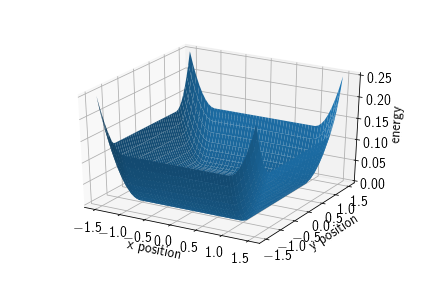
A box potential is a potential acting with a harmonic force on particles of the given type once they leave the area spanned by the cuboid that has origin as its front lower left and origin+extent as its back upper right vertex, respectively. Therefore, the cuboid is spanned by three intervals $C=\prod_{i=1}^dC_i$ with $C_i := [\text{origin}_i, \text{origin}_i+\text{extent}_i]$. Its energy term is given by
where $d(x_i, C_i)$ denotes the shortest distance between the set $C_i$ and the point $x_i$.
Adding a box potential to the system amounts to:
system.box_size=[3, 3, 3]
system.potentials.add_box(
particle_type="A", force_constant=10., origin=[-1, -1, -1], extent=[2, 2, 2]
)
Note that the simulation box and the box potential are completely independent. In the above example the simulation box is chosen larger than the full extent of the box potential. This is because particles should never leave the simulation box if it is non-periodic. The box potential however is a soft potential, i.e., particles may penetrate the boundaries of it for a short time and then be pushed back inside. To make sure that particles do not penetrate the simulation box, it has a slightly larger extent.
In particular there is a check upon simulation start that if the simulation box is not completely periodic, there must be a box potential for each particle type to keep it contained in the non-periodic directions, i.e., if there is no box potential such that
box_lower_left[dim] < potential_lower_left[dim]
and box_upper_right[dim] > potential_upper_right[dim]
where dim is a non-periodic direction, an error is raised.
Spherical potential
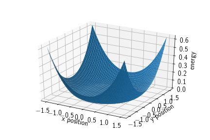
In ReaDDy one can find three different types of spherical potentials:
- exclusion potentials to keep particles out of a spherical region,
- inclusion potentials to keep particles inside a spherical region,
- barriers that can function as a spatial separator or, if initialized with negative height, as a sticky spherical surface.
All these potentials are harmonic, i.e., particles can potentially penetrate.
Spherical exclusion
Adds a spherical potential that keeps particles of a certain type excluded from the inside of the specified sphere. Its energy term is given by
where $\mathbf{c}\in\mathbb{R}^3$ denotes the center of the sphere and $r\in\mathbb{R}_{>0}$ the radius of the sphere.
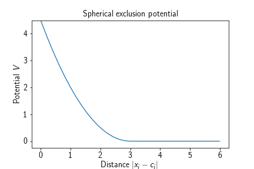
Adding such a potential to a reaction diffusion system amounts to
system.box_size = [3, 3, 3]
system.potentials.add_sphere_out(
particle_type="A", force_constant=10., origin=[0, 0, 0], radius=1.
)
yielding a spherical region of radius 1 in the center of the simulation box which keeps particles of type A from entering that region with a harmonic repulsion potential. Due to the harmonic nature of the potential and dependent on the force constant, particles are allowed to penetrate the sphere for a short period of time.
Spherical inclusion
Adds a spherical potential that keeps particles of a certain type restrained to the inside of the specified sphere. Its energy term is given by
where $\mathbf{c}\in\mathbb{R}^3$ denotes the center of the sphere and $r\in\mathbb{R}_{>0}$ the radius of the sphere.
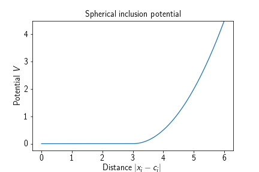
Adding such a potential to a system amounts to
system.box_size = [3, 3, 3]
system.potentials.add_sphere_in(
particle_type="A", force_constant=10., origin=[0, 0, 0], radius=1.
)
which will cause all particles of type A to be contained in a sphere of radius 1 centered in the origin with a harmonic repulsion potential. Due to the harmonic nature of the potential and dependent on the force constant, particles are allowed to penetrate the sphere for a short period of time.
Spherical barrier
A potential that forms a concentric barrier at a certain radius around a given origin. It is given a height (in terms of energy) and a width. Note that the height can also be negative, then this potential acts as a ‘sticky’ sphere. The potential consists of harmonic snippets, such that the energy landscape is continuous and differentiable, the force is only continuous and not differentiable. Its energy term is given by
where $\mathbf{c}\in\mathbb{R}^3$ is the center of the sphere, $r\in\mathbb{R}$ the sphere’s radius, $w\in\mathbb{R}$ the width of the barrier, and $h\in\mathbb{R}$ the height of the barrier.
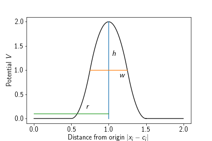
Adding such a potential to a system amounts to
system.box_size = [3, 3, 3]
# as a barrier
system.potentials.add_spherical_barrier(
particle_type="A", height=1.0, width=0.1, origin=[0, 0, 0], radius=1.
)
# sticky
system.potentials.add_spherical_barrier(
particle_type="A", height=-1.0, width=0.1, origin=[0, 0, 0], radius=1.
)
which will cause particles to be trapped inside or outside of the spherical barrier in the first case or will make them stick onto the surface of the sphere in the second case.
Pair potentials
Pair potentials or second-order potentials are potentials that depend on the relative positioning of a pair of particles to one another. They are registered with respect to two not necessarily distinct particle types and then exert a force on each particle of these types individually.
Currently available pair potentials are:
Harmonic repulsion
A harmonic repulsion potential causes each two particles of a certain type to repulse each other once they enter a certain radius. It can be used to emulate a radius of a particle type while still allowing for a relatively large time step. The potential term is given by
where $r$ is the distance at which particles begin to interact with respect to this potential.
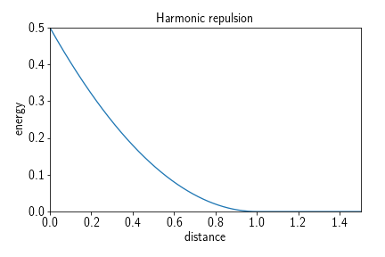
Adding such a potential to a system amounts to, e.g.,
system.potentials.add_harmonic_repulsion(
"A", "A", force_constant=10., interaction_distance=5.
)
system.potentials.add_harmonic_repulsion(
"B", "B", force_constant=10., interaction_distance=6.
)
system.potentials.add_harmonic_repulsion(
"A", "B", force_constant=10., interaction_distance=2.5+3.
)
which would cause all particles of type A or B to repulse from all other particles of type A or B. This set of potentials can be understood as inducing a “soft” radius of $r_A = 2.5$ and $r_B=3$ for particle types A and B, respectively. Soft meaning that the particles’ spheres can be penetrated for a short period of time by another particle before it is pushed out again.
Weak interaction piecewise harmonic
A weak interaction piecewise harmonic potential causes particles to crowd together once they are within a certain distance of one another. It is defined by three harmonic terms and described by a force constant $k$ which is responsible for the strength of the repulsive part of the potential, a ‘desired distance’ $d$, i.e., a distance at which the potential energy is lowest inside the interaction radius, a ‘depth’ $h$, denoting the depth of the potential well and therefore the stickiness of the potential, and a ‘cutoff’ $r_c$, denoting the distance at which particles begin to interact. The potential term reads
It typically has the following shape:
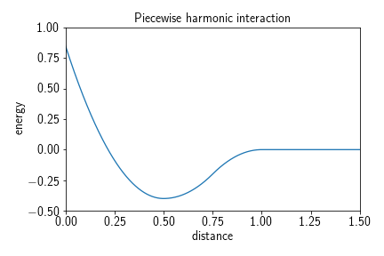
Adding such a potential to a system can be achieved by calling
system.potentials.add_weak_interaction_piecewise_harmonic(
"A", "B", force_constant=10., desired_distance=5., depth=2., cutoff=7.
)
yielding in this example a potential that lets all particle type pairings interact with one another given they are of type A and B and closer than the cutoff $r_c=7$. Once they are within range they would either by drawn into the potential well from the outside (third case in the potential term), kept in the potential well (second case in the potential term), or pushed back into the potential well if they come too close to one another (first case in the potential term).
Lennard-Jones
Similarly to a weak interaction potential, the Lennard-Jones potential models the interaction between a pair of particles. However it is not a soft potential and therefore requires a relatively small time step in order to function correctly. The potential term reads
where $k(\varepsilon, n, m)\in\mathbb{R}$ is the force constant, $\sigma\in\mathbb{R}$ the distance at which the inter-particle potential is zero, $\varepsilon\in\mathbb{R}$ the depth of the potential well, i.e., $V_\text{LJ}(r_\text{min})=-\varepsilon$, and $m,n\in\mathbb{N}, m>n$ exponents which determine the stiffness and range of the potential. For the classical Lennard-Jones potential the exponents are given by $m=12$ and $n=6$. The potential itself approaches but never reaches zero beyond the interaction well. Therefore, a cutoff is introduced, usually at $r_c=2.5\sigma$ (for the 12-6 LJ potential), which is the point at which the potential as roughly $1/60$th of its minimal value $-\varepsilon$. This however leads to a jump discontinuity at $r_c$ in the energy landscape, which can be avoided by shifting the potential by the value at the discontinuity:
The force constant $k$ is chosen such that the depth at the well is is $V(r_\mathrm{min}) = -\varepsilon$, i.e.,
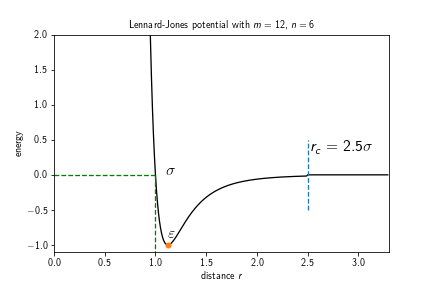
Different choices of exponents that can be found in the literature are, e.g., $9-3$, $9-6$, or $8-6$.
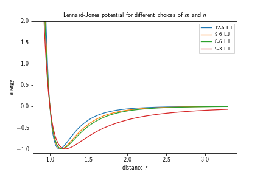
Adding such a potential to a system can be achieved by calling
system.potentials.add_lennard_jones(
"A", "B", m=12, n=6, cutoff=2.5, shift=True, epsilon=1.0, sigma=1.0)
)
yielding a truncated 12-6 Lennard-Jones potential between particles of type A and B with a zero inter-particle potential at $\sigma=2.5$, a well depth of $\varepsilon=1.0$, and a cutoff radius of $r_c=2.5 = 2.5\cdot\sigma$. If the shift in the energy landscape to avoid the jump discontinuity is not desired, it can be switched off by setting shift=False.
Screened electrostatics
The “screened electrostatics” (also: Yukawa or Debye-Hückel) potential is a potential that represents electrostatic interaction (both repulsive or attractive), which is screened with a certain screening depth. This kind of potential becomes important when dealing with particles representing proteins that have a net-charge. However, it is usually more expensive to evaluate than, e.g., harmonic repulsion, as it requires a larger cutoff and smaller time step. If the electrostatic term is attractive, a core repulsion term is added. The potential term reads
where $C\in\mathbb{R}$ is the electrostatic repulsion strength in units of energy times distance, $\kappa\in\mathbb{R}$ is the inverse screening depth in units of 1/length, $D\in\mathbb{R}$ is the repulsion strength in units of energy, $\sigma\in\mathbb{R}$ is the core repulsion radius or zero-interaction radius in units of length, $n\in\mathbb{N}$ is the core repulsion exponent (dimensionless), and $r_c\in\mathbb{R}$ the cutoff radius in units of length. It typically has the following shape:
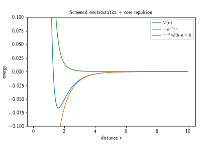
One can observe that the first term in the potential’s definition diverges towards $-\infty$ for $r\searrow 0$ which is an effect that gets countered by the second term, diverging towards $+\infty$ for $r\searrow 0$. The depth of the potential well increases with an increasing exponent $n$.
Adding such a potential to a system amounts to
system.potentials.add_screened_electrostatics(
"A", "B", electrostatic_strength=-1., inverse_screening_depth=1.,
repulsion_strength=1., repulsion_distance=1., exponent=6, cutoff=6.
)
which would introduce an electrostatic interaction between particles of type A and B that resembles the above plot.
Topologies
Topologies are a way to include molecular structure in a reaction-diffusion simulation. More specifically, a topology is a group of particles with fixed potential terms like bonds and angles between certain particles. Topologies in ReaDDy consist of two ingredients:
- A connectivity graph, where the vertices of the graph correspond to the particles in the topology,
- a lookup table for potential terms between certain combinations of particle types.
How to set up the actual connectivity graph can be found in the section about setting up and running the simulation, as it requires particles being added to the simulation.
Since particles that are part of a topology are internally treated differently than “normal” particles, their species have to be configured by a call to
system.add_topology_species("T", diffusion_constant=2.0)
Furthermore, for operations that function on the topology level, topologies have a “topology type” which can be seen as the generalization of a “particle type”. To add such a type, one can invoke
system.topologies.add_type("My topology type")
For a topology to be recognized as “valid”, both of the following conditions need to be fulfilled:
- The connectivity graph needs to be connected, i.e., there must not be independent components.
- Each edge in the connectivity graph needs to have a corresponding bond configured based on the respective particle types. If one of these conditions is not fulfilled, an exception is raised and the simulation will not start.
Potentials
Topologies are defined by a set of particles that are connected with a graph and a lookup table that defines what connectivities between what particle types yield which potentials. This section deals with the latter, i.e., with the lookup table. The lookup table is independent of the topology type, so all potentials that are defined here will be applied to pairs/triples/quadruples of particles which are connected in the respective topologies connectivity graph.
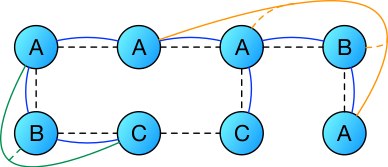
In this picture the dashed lines denote the connectivity graph between the particles, the blue lines bond potentials, the green lines angle potentials, and the orange lines dihedral potentials. One can see that bonds are defined on pairs of particles, angles on triples, dihedrals on quadruples. In this particular case one has
| Bonds | Angles | Dihedrals |
|---|---|---|
| $A\leftrightarrow A$ | $C\leftrightarrow B\leftrightarrow A$ | $A\leftrightarrow A\leftrightarrow B \leftrightarrow A$ |
| $A\leftrightarrow B$ | ||
| $A\leftrightarrow C$ |
In an actual instance of a topology one would also have to define a bond between particles of type $C\leftrightarrow C$ or remove that edge from the graph, otherwise it would not be considered valid.
ReaDDy supports three types of potentials within topologies:
Harmonic bonds
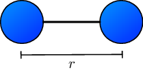
Harmonic bonds model, e.g., covalent bonds in a molecular structure. The potential term yields forces that push pairs of particles away from one another if they become closer than a certain distance and attracts them if they are further apart than that distance. It reads
where $r_0$ is the preferred distance and $k$ the force constant.
Adding such a potential term to a system amounts to, e.g.,
system.add_topology_species("T1", diffusion_constant=2.)
system.add_topology_species("T2", diffusion_constant=4.)
system.topologies.configure_harmonic_bond(
"T1", "T2", force_constant=10., length=2.
)
which would have the effect of introducing for each topology a harmonic bond with force constant 10 and preferred distance 2 between each adjacent pair of particles with types “T1” and “T2”, respectively.
Harmonic angles
Harmonic angles are potential terms that yield a preferred configuration for a triple of particles in terms of the spanned angle $\theta$.
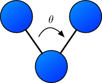
Should the spanned angle be different from the preferred angle $\theta_0$, a harmonic force acts on each of the particles toward the preferred angle. The potential energy term reads
where $\theta_{i,j,k}$ corresponds to the angle spanned by three particle’s positions $\mathbf{x}_i, \mathbf{x}_j, \mathbf{x}_k$ and $k$ is the force constant.
Configuring such a potential for a system amounts to, e.g.,
system.add_topology_species("T1", diffusion_constant=2.)
system.add_topology_species("T2", diffusion_constant=4.)
system.add_topology_species("T3", diffusion_constant=4.)
system.topologies.configure_harmonic_angle(
"T1", "T2", "T3", force_constant=1., equilibrium_angle=3.141
)
yielding harmonic angle potential terms for each triple of particles with types (T1, T2, T3) (or equivalently types (T3, T2, T1)) that are contained in a topology and have edges between the particles corresponding to types (T1, T2) and (T2, T3), respectively.
Cosine dihedrals
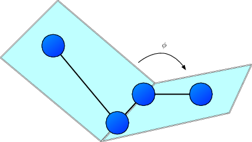
The sketch above depicts the definition of the proper dihedral angle $\phi$ spanned by four particles with corrdinates $\mathbf{x}_i$, $\mathbf{x}_j$, $\mathbf{x}_k$, and $\mathbf{x}_l$, respectively. The potential energy is given by
where $\phi_0\in [ -\pi,\pi ]$ represents the offset angle, $k$ the force constant in units of energy/angle**2, and $n\in\mathbb{N}_{>0}$ the multiplicity, indicating the number of minima encountered when rotating the bond through $360^\circ$.
The $i$-th preferred particle configuration, i.e. the $i$-th minimum of $V$ are $\phi_i = \frac{1}{n}\left( \frac{\pi}{2} - \phi_0 + i\pi \right)$
Configuring such a potential for a system amounts to, e.g.,
system.add_topology_species("T1", diffusion_constant=2.)
system.add_topology_species("T2", diffusion_constant=4.)
system.add_topology_species("T3", diffusion_constant=4.)
system.add_topology_species("T4", diffusion_constant=4.)
system.topologies.configure_cosine_dihedral(
"T1", "T2", "T3", "T4", force_constant=10, multiplicity=1., phi0=0.
)
yielding cosine dihedral potentials for each path of length 4 with vertices corresponding to particles of types (T1, T2, T3, T4) in the connectivity graph of a topology instance. The sequence in which the types are given can be reversed, i.e.,
system.topologies.configure_cosine_dihedral(
"T4", "T3", "T2", "T1", force_constant=10, multiplicity=1., phi0=0.
)
results in the same potential terms.
Angles are internally always expressed in radians.
Topology reactions
Topology reactions provide means to change the structure of a topology during the course of a simulation. Changing the structure can involve:
- Changing particle types of particles inside topologies and therefore changing the force field,
- breaking and forming bonds inside a topology resulting in different connectivity or the separation of a topology in separated instances,
- attaching particles to topologies,
- connecting two topologies by introducing an edge between their graphs.
These changes are divided into two types: Structural reactions and spatial reactions, where, as the name suggests, structural reactions change the internal structure of a topology and are independent of the actual spatial configuration of the system and spatial reactions represent local changes of the graph triggered by spatial events, i.e., attaching particles or forming bonds between two topology instances. The following sections are ordered accordingly:
Structural reactions
Structural topology reactions are defined on the topology type. They basically consist out of two functions:
- the reaction function, taking a topology object as input and returning a
reaction recipedescribing what the structural changes are to be applied to the topology - the rate function, which takes a topology object as input and returns a corresponding fixed rate.
The rate function is evaluated initially and then only when the topology has changed due to other reactions. The reaction function is only evaluated when a topology reaction is performed. It should be noted that these function evaluations can have negative performance impacts when occurring frequently.
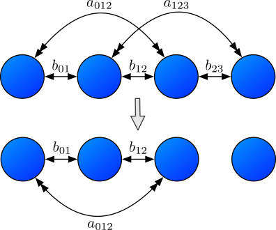
The above figure shows an example of a structural topology reaction. In the upper row there are particles $i,j,k,l$ from left to right with a graph that connects the pairs $(i,j)$, $(j,k)$, and $(k,l)$. Due to this adjacency, there are bonds $b_{01}$, $b_{12}$, and $b_{23}$ as well as angles $a_{012}$ and $a_{123}$. The lower row represents the configuration after a topology reaction that removed the edge $(k,l)$. In its absence the bond $b_{12}$ and the angle $a_{123}$ are removed and the topology originally consisting out of four particles decays into two topologies - one with three particles and one trivial topology containing just one particle.
The reaction function
In order to configure such a reaction for a reaction diffusion system, one first needs to set up a function that given a topology returns an instance of StructuralReactionRecipe, essentially describing the desired changes in structure:
def no_op_reaction_function(topology):
recipe = readdy.StructuralReactionRecipe(topology)
return recipe
One can base the behavior of the reaction on the current state of the topology instance. It offers information about the contained particles configuration:
topology.get_graph()ortopology.graphyields the connectivity graph of the topology:graph.get_vertices()orgraph.verticesyields a list of vertices that has a 1-1 correspondence to what is yielded bytopology.particles. Each vertex itself can be iterated, yielding its adjacent vertices:# for every vertex for v in graph.vertices: print("vertex {}".format(v.particle_index)) # obtain number of its neighbors' neighbors n_neighbors_neighbors = 0 for neighbor in v: for neighbor_neighbor in neighbor.get(): n_neighbors_neighbors += 1graph.get_edges()orgraph.edgesyields a list of edges contained in the graph, where each edge is represented by a tuple of vertices:for e in graph.get_edges(): v1, v2 = e[0], e[1] print("edge {} -- {}".format(v1.particle_index, v2.particle_index))
topology.position_of_vertex(v)yields the position of the particle corresponding to the provided vertex,topology.particle_type_of_vertex(v)yields the type of the particle corresponding to the provided vertex,topology.particle_id_of_vertex(v)yields the unique id of the particle corresponding to the provided vertex.
With these information, there are several operations that can be added to a recipe:
recipe.change_particle_type(vertex_index, type): Changes the particle type of the tovertex_indexassociated particle to the given type, where the vertex index corresponds to the particle’s index. Can also be called with vertex instance directly.recipe.add_edge(v_index1, v_index2): Introduces an edge in the graph between vertices corresponding to indicesv_index1andv_index2. Can also be called with vertex instances directly.recipe.remove_edge(v_index1, v_index2): Attempts to remove an edge between vertices corresponding to the indices. Depending on the configuration of the topology reaction, this can lead to a failed state or multiple sub-topologies. Can also be called with vertex instance directly.recipe.remove_edge(edge): Same as with indices just that it takes an edge instance as contained ingraph.get_edges().recipe.separate_vertex(index): Removes all edges from the topology’s graph that contain the vertex corresponding to the provided index (or vertex instance). If no new edge is formed between the given vertex this call, depending on the configuration of the reaction, can lead to a failed state or to formation of a topology consisting out of only one particle. In the latter case, this call can be followed by a call torecipe.change_particle_type, where the target type is no topology type. Then, no one-particle topology will be formed but the particle will simply be emitted and treated as normal particle.recipe.change_topology_type(type): Changes the type of the topology to the given type, potentially changing its structural and spatial topology reactions.recipe.append_particle(list_of_neighbor_vertices, particle_type, position): Adds a new particle to the topology. It will have the specifiedparticle_typeandpositionand will be connected to the vertices specified inlist_of_neighbor_vertices.
The rate function
Same as ordinary reactions, also structural topology reactions have a rate with which they occur. This rate is microscopic, has units of inverse time and can be understood as the probability per unit time of the reaction taking place. Same as for normal reactions, the probability is evaluated as $p=1-e^{-\lambda\tau}$, where $\lambda\geq0$ is the rate and $\tau$ the integration time step.
In order to define a rate for a certain structural reaction, one needs to provide a rate function:
def my_rate_function(topology):
n = len(topology.get_graph().get_vertices())
if n > 3:
return .5 * n
else:
return 20.
The function takes a topology instance as argument and returns a floating point value representing the rate in terms of the magnitude w.r.t. the default units. In this example it returns half the number of vertices if the number of vertices is larger than three, otherwise a constant value of 20.
For performance reasons it is only evaluated if the topology changes structurally, therefore the rate should optimally not depend on anything that can change a lot in the simulation time between evaluating the rate function and performing the reaction, e.g., the particles’ spatial configuration.
Adding a structural reaction
Given these two functions, the reaction and the rate function, all that is left to do is to add them to a certain topology type in the system:
system.topologies.add_structural_reaction(
name="my_structural_reaction",
topology_type="TType",
reaction_function=no_op_reaction_function,
rate_function=my_rate_function,
raise_if_invalid=True, expect_connected=False
)
where name is a user-provided unique identifier for this reaction, which is used in observing reaction counts.
The above snippet adds the structural reaction my_structural_reaction to all topologies of type TType with the provided reaction function and rate function.
The option raise_if_invalid raises, if set to True, an error if the outcome of the reaction function is invalid, otherwise it will just roll back to the state of before the reaction and print a warning into the log.
The other option expect_connected can trigger depending on the value of raise_if_invalid a raise if set to True and the topology’s connectivity graph decayed into two or more independent components.
Spatial reactions
Spatial reactions are locally triggered by proximity of particles, therefore they are not only defined on topology types but also on particle types. In principle there are two kinds of spatial reactions: The kind that causes forming a bond between two particles and the kind that just changes a particle/topology type, corresponding to particle fusion and enzymatic reactions, respectively. Analogously spatial topology reactions also possess
- a rate determining how likely the reaction occurs per time step as well as
- a radius determining the volume which is scanned for potential reaction partners.
To simplify the definition of these reactions a descriptor language is used, deciding about the nature of the reaction. It consists out of a label and a topology-particle-type reaction equation:
where $T_i$ denote topology types, $P_i$ denote particle types.
- The first reaction is of “enzymatic” type, changing the types of particles corresponding to $P_1$ to $P_3$ and $P_2$ to $P_4$ if they are contained in topologies of type $T_1$ and $T_2$ which are also changed to $T_3$ and $T_4$, respectively.
- The second reaction is of “fusion” type, merging two topologies of types $T_1$ and $T_2$ by forming a bond between a particle pair with types $P_1$ and $P_2$ in their respective topologies. The result is a topology of type $T_3$ and the particles between which the bond was formed are of types $P_3$ and $P_4$.
Some of these reactions can also be performed with a topology and a free particle. In particular, the following types of reactions are possible:
TT-Fusion: T1(p1)+T2(p2) -> T3(p3--p4): a fusion of a topology of typeT1with a topology of typeT2by forming a bond between a pair of particles with typesp1andp2, where the product is a topology of typeT3and the newly connected particles changed their types top3andp4, respectively.TT-Fusion-self: T1(p1)+T1(p2) -> T3(p3--p4) [self=true]: a fusion of two topologies of typeT1similarly to the first type with the difference that now also particles within the same topology can be reaction partners.TP-Fusion: T1(p1)+(p2) -> T2(p3--p4): attaching a free particle of typep2to a topology of typeT1if it is close to a particle of typep1in that topology, yielding a topology of typeT2in which the newly connected particles are now of typep3andp4, respectively.TT-Enzymatic: T1(p1)+T2(p2) -> T3(p3)+T4(p4): not changing the structure of the graph of the reaction partners but changing particle types possibly locally influencing the force field and changing topology types possibly leading to different topology reactions.TP-Enzymatic: T1(p1)+(p2) -> T2(p3)+(p4): same as theTT-Enzymaticreaction just that here it is performed with one topology and one free particle.
Adding such a reaction to a system amounts to, e.g.,
system.topologies.add_spatial_reaction(
'TT-Fusion: T1(p1)+T2(p2) -> T3(p3--p4)', rate=1., radius=1.
)
where the rate is in units of 1/time and the radius is a length. The descriptor is always the first argument and can be of any of the above discussed types.
It should be noted that while usually “normal” particle-particle reactions are not possible with topology-typed particles, one can define enzymatic reactions where the catalyst is a topology type as this leaves the topology untouched and therefore can be evaluated in the normal reaction procedure.
system.add_species("A", diffusion_constant=1.)
system.add_species("B", diffusion_constant=1.)
system.add_topology_species("P", diffusion_constant=.5)
system.topologies.add_type("T")
# OK, this attaches the particle A to the topology
system.topologies.add_spatial_reaction('label1: T1(P)+(A)->T1(P--P)')
# Fails, A is not a topology species type
system.topologies.add_spatial_reaction('label1: T1(P)+(A)->T1(P--A)')
# Fails, P is not a normal particle type
system.topologies.add_spatial_reaction('label1: T1(P)+(P)->T1(P--P)')
# OK, this is a normal fusion reaction
system.reactions.add('A +(2.) A -> A', rate=.1)
# Fails, P is not a normal particle type but a topology particle type
system.reactions.add('A +(2.) P -> A', rate=.2)
# OK, this is the special case where P is the catalyst
system.reactions.add('A +(2.) P -> B + P', rate=.3)
Predefined reactions
For convenience there are predefined topology reactions that can be added to a certain topology type.
Topology dissociation
This reaction causes a topology to break bonds with a rate of n_edges*bond_breaking_rate, causing it to dissociate. In this process it may decompose into multiple independent components of the same topology type. Consequently, each of these independent components again has a topology dissociation reaction.
Adding such a reaction to a system amounts to
system.topologies.add_type("T")
system.topologies.add_topology_dissociation("T", bond_breaking_rate=10.)